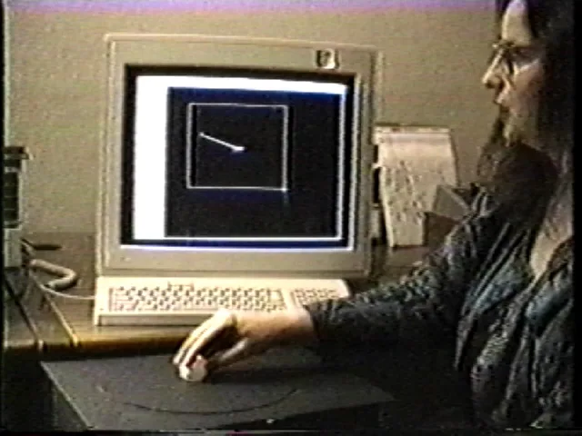
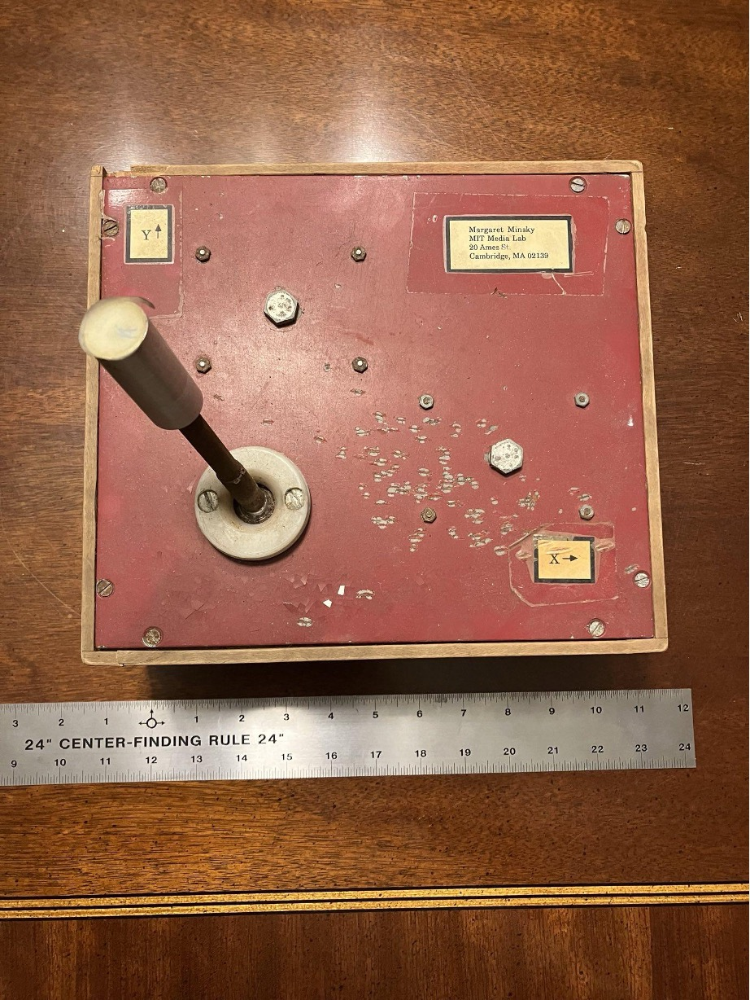
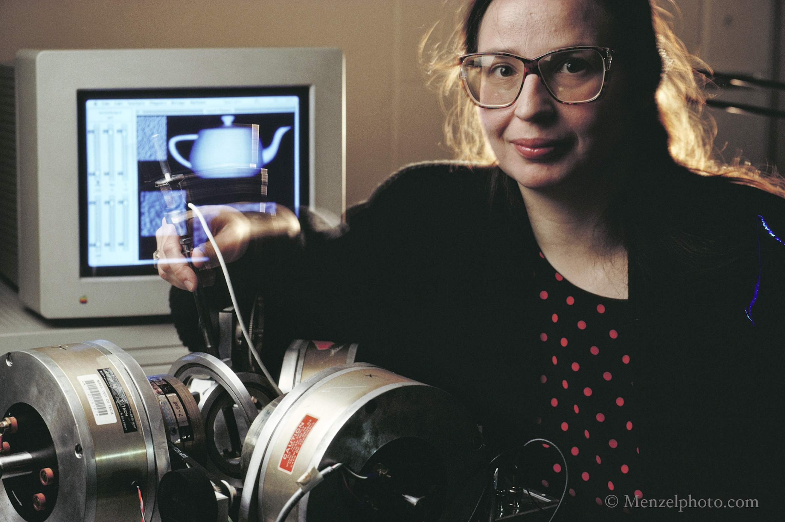

Minsky Sandpaper
The 2-DOF force-feedback joystick that synthesized virtual textures through programmable lateral forces, birthing computational haptics.

Overview
The Minsky Sandpaper system (formally 'Computational Haptics: the Sandpaper System for Synthesizing Texture for a Force-Feedback Display') was developed by Margaret Minsky at the MIT Media Lab beginning in the late 1980s, with the foundational paper presented at SIGGRAPH 1990. It consisted of a custom-built 2-DOF force-feedback joystick coupled with software that could algorithmically synthesize the feel of virtual surface textures — sandpaper, rubber, velvet, corduroy, and brushed metal — by modulating lateral (tangential) forces in real time as the user moved the joystick. The core innovation was the lateral-force algorithm: rather than attempting to physically reproduce surface microgeometry with vibrating pins or vertical actuators, Minsky treated texture as a programmable force field computed from a height-field representation. This insight — that convincing haptic textures could be rendered entirely through in-plane forces at ~1 kHz servo rates — marked the birth of computational haptics as a research field.
The physical device was an integrated assembly of two DC servo motors mounted at right angles within a wooden-and-metal box, driving a joystick through direct-drive linkages. Optical encoders provided position sensing; the motors operated in current-drive mode for proportional torque. A custom ISA-bus interface board connected to a Sun workstation or early PC. Users could explore an entire palette of virtual materials — fine and coarse sandpaper, rubber (damping-dominant), corduroy (oriented ridges), velvet (directional friction anisotropy), and brushed metal (directional striations) — with texture changes occurring instantaneously, as there were no physical texture plates to swap.
Minsky, collaborating with psychologist Susan Lederman, conducted perceptual studies validating that users could reliably distinguish synthesized textures and that perceived roughness matched real-world psychophysical data. The SIGGRAPH 1990 paper 'Feeling and Seeing: Issues in Force Display' (with co-authors Ouh-young, Steele, Brooks, and Behensky) has accumulated over 880 citations. Minsky's 1995 doctoral thesis remains available through MIT DSpace and is widely cited as foundational in the haptics literature.
Deep dive
The Sandpaper system modeled each virtual surface as a 2D height field h(x,y), typically a 32×32 to 128×128 array. At each servo cycle (~1 kHz), the system sampled the joystick position, interpolated the local gradient of the height field, and computed restoring forces: F_x = −k_x · ∂h/∂x and F_y = −k_y · ∂h/∂y. Different textures were produced by varying the spatial frequency content of h(x,y): fine sandpaper used high-frequency filtered noise, corduroy used oriented ridges, and rubber used low-frequency damping. An optional velocity-dependent damping term (F ← F − b·v) produced the characteristic 'catch-and-release' stick-slip sensation of coarse grit. Crucially, no normal-force (vertical) actuator was needed — the brain interpreted the lateral force variations as surface roughness, a remarkable perceptual illusion that validated the entire approach.
The joystick used two Pittman-series iron-core DC servo motors mounted at right angles, driving the handle through direct-drive linkages to minimize backlash and friction. Optical encoders on the motor shafts provided position sensing. The motors operated in current-drive mode — controlling motor current directly produced proportional torque, which translated to force at the handle. A custom ISA-bus interface card read encoder positions and commanded motor currents. All texture computation ran on the host CPU (a Sun workstation or early PC). Two generations of hardware were built: the original force-feedback joystick (1984–89) and a smaller 'pingpong joystick' interface for later experiments. The system required only 2 DOF (planar motion) to produce convincing sensations across a wide range of virtual materials.
Margaret Minsky, daughter of AI pioneer Marvin Minsky, earned her BS in Mathematics from MIT and her PhD in Media Arts and Sciences from the MIT Media Lab (1995), advised by Nicholas Negroponte. The Sandpaper work was conducted at the Media Lab during its foundational era. Concurrently, Margaret was a Visiting Scholar at UNC Chapel Hill's Computer Science Department, collaborating with Frederick P. Brooks Jr. — the Turing Award winner behind the IBM System/360 and UNC's pioneering VR/graphics research. Brooks and his student Ming Ouh-young had developed the GROPE haptic display for molecular docking; Minsky's texture work complemented this by adding surface feel to the haptic vocabulary. The 1990 SIGGRAPH paper's author list (Minsky, Ouh-young, Steele, Brooks, Behensky) is a who's-who of early haptics and VR research.
The Sandpaper system was first presented at the 1990 ACM SIGGRAPH Symposium on 3D Interactive Graphics. Minsky's 1995 PhD thesis, 'Computational Haptics: the Sandpaper System for Synthesizing Texture for a Force-Feedback Display,' remains widely cited. A 1996 follow-up paper with Susan Lederman, 'Simulated Haptic Textures: Roughness,' validated the psychophysical accuracy of the synthesized textures. Minsky later reflected on the field's trajectory in 'Will Haptics Research Parallel Computer Graphics Research?' (ICAT 1997), drawing explicit parallels between the early days of computer graphics and the nascent field of computational haptics. Her 'Home Haptics' technical report (MIT AI Lab, 1996) explored bringing texture feedback into consumer contexts — remarkably prescient given today's haptic-enabled phones, game controllers, and VR devices.
Team & pioneers
- Margaret Minsky. Lead researcher, inventor of the lateral-force algorithm. PhD MIT Media Lab (1995). Daughter of AI pioneer Marvin Minsky. Later directed research at Atari Cambridge Laboratory and Interval Research Corporation.
- Frederick P. Brooks Jr.. Turing Award winner (1999). Led IBM System/360 development, founded UNC's VR research program. Co-author on the 1990 SIGGRAPH paper and host of Minsky as Visiting Scholar at UNC.
- Ming Ouh-young. PhD student of Brooks at UNC Chapel Hill. Worked on the GROPE molecular docking haptic display and co-authored the 1990 SIGGRAPH paper.
- Oliver Steele. Software collaborator and co-author on the 1990 SIGGRAPH paper. Longtime collaborator of Margaret Minsky.
- Michael Behensky. Hardware engineering collaborator. Co-author on the 1990 SIGGRAPH paper.
- Susan Lederman. Psychologist specializing in tactile perception. Co-author with Minsky on 'Simulated Haptic Textures: Roughness' (1996).
- Nicholas Negroponte. Co-founder and chairman of the MIT Media Lab. Served as Minsky's doctoral advisor.
Media



Sources
- Minsky, M. (1995). Computational haptics: the Sandpaper system for synthesizing texture for a force-feedback display. PhD Thesis, MIT. Advisor: Nicholas Negroponte.
- Minsky, M., Ouh-young, M., Steele, O., Brooks, F. P., & Behensky, M. (1990). Feeling and Seeing: Issues in Force Display. ACM SIGGRAPH Computer Graphics, 24(2), 235–241. (880+ citations)
- Minsky, M. & Lederman, S. J. (1996). Simulated Haptic Textures: Roughness. ASME IMECE, DSC-Vol. 58.
- Margaret Minsky — Research Page (mminsky.com)
- Margaret Minsky — King's College London Research Collection
- Margaret Minsky — Exploratorium Tinkering Studio
- Margaret R. Minsky — ACM SIGGRAPH History Archives
- Margaret Minsky — HKUST(GZ) Computational Media and Arts faculty profile
- Marvin Minsky obituary — MIT News (confirms Margaret Minsky as daughter)